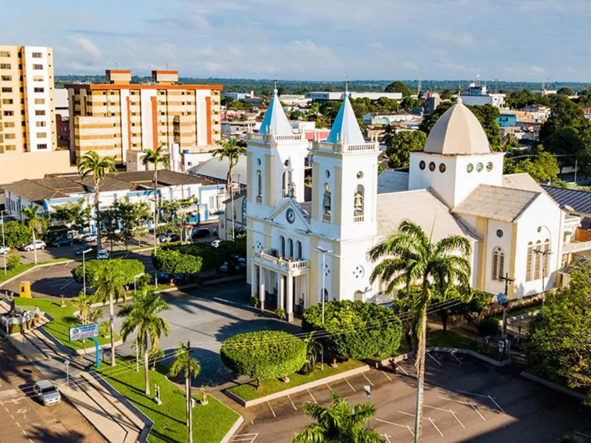

O Rondônia é um estado localizado na região Norte do Brasil, conhecido por sua grande área de floresta amazônica e por sua importância na produção agropecuária. Sua capital é Porto Velho, cidade que se destaca pela influência histórica da construção da Estrada de Ferro Madeira-Mamoré. O estado é cortado pelo Rio Madeira, um dos principais rios da Amazônia, utilizado para transporte e geração de energia. A economia de Rondônia é baseada principalmente na pecuária, agricultura e no extrativismo vegetal, além da produção de energia hidrelétrica. O estado também apresenta rica diversidade cultural, formada pela mistura de povos indígenas, migrantes de várias regiões do Brasil e comunidades ribeirinhas.

Voltar